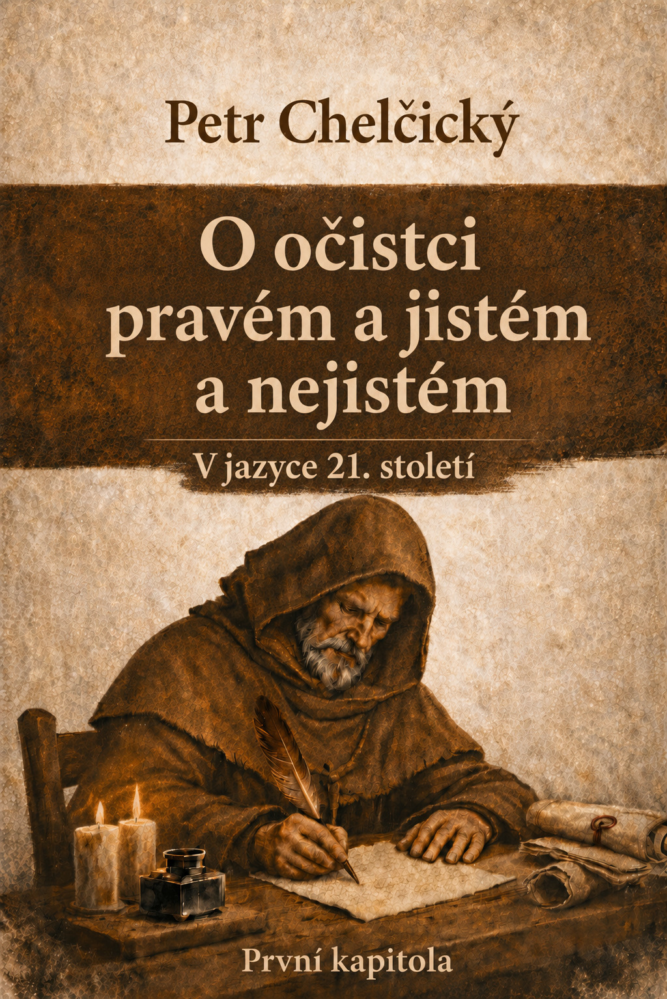

Část 1
Úvod
První kapitola traktátu O očistci pravém a jistém a nejistém staví čtenáře před zásadní otázku: kde může člověk hledat skutečné a spolehlivé očištění od hříchu?…
Otevřít kapitolu →Webová edice v jazyce 21. století.

První kapitola traktátu O očistci pravém a jistém a nejistém staví čtenáře před zásadní otázku: kde může člověk hledat skutečné a spolehlivé očištění od hříchu?…
Otevřít kapitolu →Evangelisté i svatí apoštolové ukazují, že ten pravý a jistý očistec pravé a jisté svaté církve, vyvolené nevěsty Ježíše Krista, je v Kristu Ježíši, v jeho slovu a v jeho předrahé krvi…
Otevřít kapitolu →Tato e-kniha zpřístupňuje první kapitolu traktátu Petra Chelčického O očistci pravém a jistém a nejistém v jazyce 21. století…
Otevřít kapitolu →První kapitola traktátu ukazuje Chelčického jako autora, který se nespokojuje s náboženskou představou jen proto, že je rozšířená nebo tradičně přijímaná. Vede čtenáře zpět k otázce, co je pevně dosvědčeno v Písmu a kde může člověk najít skutečnou jistotu před Bohem…
Otevřít kapitolu →
Petr Chelčický
O očistci pravém a jistém a nejistém – první kapitola
Digitální vydání: vcelkakorektorka.cz, 2026. Jazyková modernizace a poznámkový aparát © Pavel Dolejš 2026.
Otevřít →